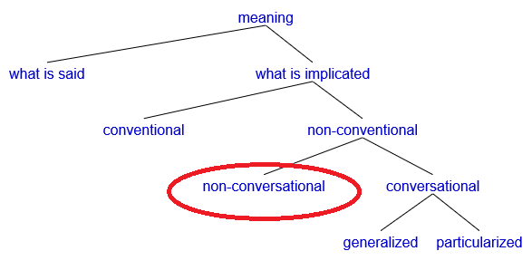

Thus far we have usually discussed implicatures by talking
about what certain utterances "mean". But, as mentioned in the previous
module, that is an oversimplification. We actually need to think about
what utterances tell us the speaker believes. I.e., rather than
just saying "utterance X means Y...", we should be saying "utterance X
tells me that the speaker believes Y...". (Recall that, as we learned in
the module about the Cooperative
Principle, "meaning" can be defined as just what a speaker wants
the hearer to believe and wants the hearer to recognize that the speaker
wants the hearer to believe; so, thinking about the speaker's beliefs
and intentions is a crucial part of figuring out what anything
"means".)
With that in mind, for the next several modules we will
take a deeper look about what we can learn about implicatures by considering
what the speaker knows and believes. What someone knows or believes is often
called their epistemic state. (More formally, an epistemic state
is someone's attitude towards whether or not some proposition is true;
statements like "I know P", "I'm not sure about P",
"I have no idea whether P", "I am certain that P is wrong
, etc., are all ways of describing my
epistemic state towards P [which could be any proposition,
like "there is a wig in this box", "3+3=10", or whatever, depending on
the context].)
A sample implicature
In this scene near the end of the video game Horizon: Zero
Dawn, the main character, Aloy, is talking to her occasional ally, Nil,
who has come to offer his assistance in an upcoming battle for the fate of
the world (what role-playing game doesn't have a climactic battle for the
fate of the world?). Nil is an evil sociopath who loves fighting and killing, but in
this particular moment he's a "lesser of two evils" (because the enemy they're
about to face wants to destroy all life on Earth), so Aloy is nevertheless
grateful for his offer to help in the important fight that's about to happen.
After chiding him for being a creep, she acknowledges that his assistance
will be valuable:
Aloy: Nil, you're making
it difficult to be glad to see you! But, you're needed; this battle will
be hard.
Nil: Hard? I was assured
the odds would be near impossible!
Here we see that Nil objects to Aloy's description of the
coming battle as "hard", because he thinks it will be more than just
"hard"; he thinks it will be "near impossible". In other words, he
interprets Aloy's utterance (#1) as having the implicature shown in #2:
Utterance:This battle will be hard.
implicates: This battle will be hard, but not "near-impossible".
Since Nil thinks the battle will be near-impossible and Aloy
seems to implicate that it won't be, he disagrees with (or corrects or
clarifies) her. Importantly, he's not actually disagreeing with what
she said, he's disagreeing with what the implicated.
What Aloy said, "This battle will be hard", literally just
means that its difficulty will be at or above some certain level; it is
logically consistent with the possibility that the battle might be
near-impossible or even impossible. The idea that the battle will be hard
is the literal meaning of what Aloy said, and the idea that it won't be
near-impossible is a conversational implicature, not a literal meaning.
We can tell by using the implicature diagnostics we've seen before, such
as the cancellability test ("This battle will be hard; in fact, it
will be nearly impossible").
This kind of implicature is often called a scalar
implicature, because it's assumed to come from thinking about some "scale"
of related but progressively stronger terms (like <cool, cold,
frigid>, <maybe, probably, definitely<
or in this case, something like <hard, formidable,
nearly impossible>). The implicature seems to follow straightforwardly
from Gricean logic. Per the maxim of quantity, if Aloy believed the battle
would be almost impossible, she could have said "The battle will be
near impossible"; but she didn't say that, so we infer that she means
it's not near-impossible (i.e., she means it will hard but there's still a
good chance that victory is possible).
For a very similar example, imagine that some lady Rebecca
says "Josh is smart". People may often infer that she means he's
just smart but he's not a brilliant super-genius. This implicature follows
from the same logic just outlined above: if Josh were brilliant then
Rebecca could have said "Josh is brilliant", but she didn't say
that, so we infer that there must be a reason she chose not to say that,
and then we infer that the reason is she really means he's not brilliant.
Again, this is a "scalar implicature": assuming people know there is some
scale like <smart, brilliant>, if they hear someone
say "smart", they will think "Why didn't the speaker say brilliant?",
and ultimately infer that the speaker means not-brilliant.
But I have oversimplified here. We actually need more steps
of reasoning to infer that Rebecca saying Josh is smart means "Josh is smart but
not brilliant" (or that Aloy saying This battle will be hard means
"This battle will be hard, but not near-impossible"). The problem with the analysis I just described above is that
I tried to describe the implicature vaguely as what the utterance "means", rather than
putting "meaning" in terms of Aloy's and Rebecca's beliefs and intentions. (Recall that,
as we learned in the first module about Gricean reasoning, "meaning" in
Gricean theory is all about what the speaker believes and wants to make us
know that they believe.)
Let's try analyzing the "Josh is smart" example again, and be more careful about delineating
exactly what Rebecca (the speaker) believes or intends at each step of the process.
Following the description outlined by Geurts (chapter 2), we can use the
following sort of reasoning to interpret "Josh is smart":
Step 1. I notice that instead of saying "Josh is smart", Rebecca could have
said something stronger and more specific ("Josh is brilliant").
I ask myself, why didn't she say that?
Step 2. I assume Rebecca does not believe that Josh is brilliant. Maybe she thinks
he's not brilliant, or maybe she has no opinion whatsoever.
Step 3. I further assume that Rebecca does have some opinion about whether or not
Josh is brilliant.
Step 4. If Rebecca has some opinion about whether or not Josh is brilliant, and
Rebecca does not believe Josh is brilliant (see Step 2!), then there is only one option
left: she believes he is not brilliant.
To understand the distinction here, it's necessary to keep in mind
that "X does not believe Y" is not the same as "X believes not-Y". As I mentioned
in step 2 above, "Rebecca does not believe Josh is brilliant" literally
means that the statement "Rebecca believes Josh is brilliant" is false: it could be false because
Rebecca really believes Josh is not brilliant, or it could be false because Rebecca
doesn't have any beliefs or opinions about this one way or another (maybe she doesn't
even know Josh!).
Some helpful notation
I find this distinction clearer to express if we use some semantics
notation instead of using plain English, because plain English is too ambiguous.
Geurts expresses these two different meanings with the formulae
¬BELR(P) and
BELR(¬P). I know semantics notation may look a
bit intimidating, but let's take a moment to break these down, because I think they
will be useful.
P is a placeholder for some proposition; in this example, we
are using P to refer to the proposition that Josh is brilliant.
BEL is short for "believes", and the subscript R is short for
Rebecca. So BELR(P), in our current example, means
"Rebecca believes that P", i.e., "Rebecca believes that Josh is brilliant."
The most crucial piece left is the ¬ sign, which means "not". (Some authors use
the symbols ~ or ! to mean "not". These are all interchangeable to me.) So we end up
with two different formulae (representing two different meanings), depending on
where we put the "not":
¬BELR(P): It is not true that Rebecca believes
Josh is brilliant.
BELR(¬P): Rebecca believes that Josh is not
brilliant.
The English sentence "Rebecca doesn't believe Josh is brilliant"
is ambiguous between those two meanings (we'll talk about this issue a lot more in
the next module, Negative strengthening. For
now, the point is just: to be clear about what meaning we're talking about, we
need to say ¬BELR(P) or BELR(¬P)!
Now let's fit these back into the four-step reasoning procedure
we outlined above:
In Step 1, we notice that Rebecca could have said something stronger (P=Josh is brilliant)
but she didn't.
In Step 2, we infer that the reason she didn't say P is because she doesn't
believe P: ¬BELR(P).
In Step 3, we assume that she has an opinion; we can formally express this as
"BELR(P) or BELR(¬P)",
i.e., either Rebecca believes Josh is brilliant or she believes Josh is not
brilliant.
Finally in Step 4, we put together steps 2 and 3. In step 3 we saw that
BELR(P) or BELR(¬P).
In step 2 we saw that BELR(P) cannot be true (because
¬BELR(P)). So we are left with the following logic:
Either BELR(P) or BELR(¬P)
must be true, per Step 3
BELR(P) has already been ruled out by Step 2
All that's left is BELR(¬P), so it must
be true.
Through those steps we are left with BELR(¬P),
i.e., Rebecca believes that Josh is not brilliant.
Weak and strong implicatures
The important point here is that, if we hear Rebecca say "Josh is smart"
and then we infer that she means he's not brilliant, then we have actually inferred two
implicatures. In step 2, we infer that Rebecca does not believe Josh is brilliant
(¬BELR(P)); we do this based on the Gricean maxim
of quantity (we noticed that she could have said something more informative, but
she chose not to, so apparently she flouted that maxim). Then, in step 4, we infer
that Rebecca believes Josh is not brilliant (BELR(¬P));
we do this based on assuming that Rebecca has an opinion about whether or not Josh
is brilliant.
Many people refer to the first implicature here
(¬BELR(P)) as a weak implicature
and to the second (BELR(¬P)) as a strong
implicature (see, e.g., Geurts, chapter 2). This distinction is very important
for pragmatics, but often overlooked; a lot of research and thinking about implicatures just
looks at the strong implicature (just like we did with the examples at the beginning
of this module) and neglects the weak implicature. (My own research on pragmatics has also
been guilty of this.) But they are different, and are realized through different processes.
For example, if we don't have reason to believe that Rebecca has any opinion on Josh's
brilliance (for example, maybe she's only just met him, and has seem him do some simple
tasks but has never yet had the opportunity to see him do anything that would require
brilliance), then we might not get the strong implicature at all.
According to some pragmaticists,
like Geurts, the ability to explain both strong and weak implicatures is one of the key
advantages of the Gricean theory as opposed to others. You can decide for yourself whether
or not you agree (maybe you can think of some other way to explain where these two implicatures
come from), but you should always keep in mind that any theory of pragmatics will need to
explain these two different kinds of implicatures (unless it turns out that these don't
really exist or aren't really different).
(Note that here I am using the terms "weak implicature" and "strong implicature"
in the sense that Geurts and some other Gricean pragmaticists use them, and not in the sense
that some other theories do. For instance, Relevance Theory [another approach to pragmatics
which is quite different from the Gricean approach that we are mostly focusing on in this
class] also has concepts of "weak implicature" and "strong implicature", but those concepts
mean something completely different in Relevance Theory than what they mean in this module.
In Relevance Theory, a "strong implicature" is an implicature that you need to recover
in order to figure out what message the speaker intends to communicate to you, and a "weak
implicature" is some extra meaning that isn't totally necessary for the purpose of what
the speaker is trying to communicate—this is similar to Noveck's distinction between
"voluntary implicatures" and "imposed implicatures" that we discussed in
the previous module. So just keep in mind that you
might someday see the words "weak implicature" and "strong implicature" used to refer to
a very different concept than what this module was about.)
Step 3 from the logic above, where we assume that the speaker must have had
an opinion one way or another, is called the Competence Assumption, or
sometimes the Opinionatedness Assumption. It is the logical
step we take when we assume that if someone bothered to say something then they must
have an opinion about the thing they're talking about. The next several modules will
investigate several pragmatic phenomena which can be explained by considering when the
"Competence Assumption" does or does not apply.
Video summary
In-class activities
Have students brainstorm at least one more example of an utterance that has both strong and
weak implicatures, and think of a context where the strong implicature would arise and one
where the strong implicature would not arise.
Gradient adjectives, like the one we focused on in this module, are an easy place to find
strong and weak implicatures. Others are quantifiers like "some" modals like
"might" ("some of the Xs" is often taken to imply "some but not all of the Xs",
and "she might Y" is often taken to imply "she might Y but it's not certain"; these are
both classical examples of "scalar implicatures" which will be discussed in more depth
in later modules), and so-called "ad-hoc scales" (e.g., if I ask what classes your friend
is taking this semester and you say "engineering", I might assume your friend is only
taking engineering and nothing else).
I've sometimes wondered whether strong implicatures are even the same kind of implicature
as the others we've seen.
This will ultimately probably depend on how we define "implicature". Certainly strong
implicatures are something that is beyond "what is said", and the way they are derived
is based on Gricean reasoning about the speaker's beliefs and intentions (recall the
bit about the "what" intention and the "that" intention that we learned about in the
module about the Cooperative Principle). So, if
we use the term "implicature" to mean anything non-truth-conditional meaning that is
based on Gricean reasoning about intentions, then strong implicatures seem to count. However,
they are not derived from the Cooperative Principle; they're derived from
assuming the speaker is competent (i.e., either BELR(P) or
BELR(¬P); the speaker has an opinion one way or the
other), which is different than the Cooperative Principle. (Although maybe someone could
argue that this competency assumption is based on the Cooperative Principle, on the
assumption that a cooperative speaker would keep their mouth shut if they have no
opinion? This seems debateable to me.) Zufferey et al. (chapter 6.7) also recognize
that the assumption of speaker competence (which they call opinionatedness,
a clunkier but more accurate term) is "non-Gricean". So, even though strong implicatures
seem to be implicatures, they seem to be derived in a fundamentally different way than
other conventional and conversational implicatures we have seen.
A key distinction here is between different types of "implicature". We have already seen
that not all implicatures are conversational implicatures; there are also
conventional implicatures. But those might not be the only types of implicatures.
Indeed, Levinson (chapter 3.1) divides implicature into "conventional" and "non-conventional",
then divides non-conventional implicature into "non-conversational" and "conversational"
(and further divides conversational implicature into generalized and particularized), as
shown in the chart below (based on Levinson, p. 131). So this leaves a type of implicature
that we don't seem to have seen yet: implicatures that are neither conventional nor conversational
(the red circle in the image below). Levinson doesn't say anything about
what these implicatures might be (and, interestingly, many other pragmatics texts, such
as Zufferey et al chapter 6 figure 3, have charts very similar to this one, just with
this one piece removed), but I wonder if "strong implicatures" fall into this group.

Do any of the implicature diagnostics help us figure
out if strong implicatures are conversational implicatures? Or are there any other
tests or characteristics you can think of that distinguish between strong implicatures
and implicatures based on the Cooperative Principle?